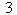
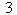
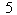
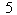
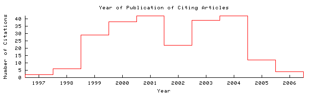

Dekang Lin  @ NUS Home/Search
Context Related @ NUS Home/Search
Context Related
| upenn.edu/J/J99/J992008.pdf Cached: PS.gz PS PDF Image Update Help From: upenn.edu/J/J99/ (more) (Enter author homepages) |
Rate this article:      (best)  (best)Comment on this article |
Abstract: he WordNet lexical database and search software" by Randee Tengi. These chapters are essentially updated versions of four papers from Miller (1990). Compared with the earlier papers, the chapters in this book focus more on the underlying assumptions and rationales behind the design decisions. The description of the information contained in WordNet, however, is not as detailed as in Miller (1990). The main new additions in these chapters include an explanation of sense grouping in George... (Update)
Cited by: More
Annotating Concept Mention Patterns - Beata Beigman Klebanov (Correct)
Walk the Talk: Connecting Language, Knowledge, Action in.. - Matt Macmahon Dept (Correct)
Asking and answering queries semantically - Bouquet Kuper Zanobini (Correct)
Similar documents based on text: More All
0.6: Lexical Chains as Representations of Context for the.. - Hirst, St-Onge (1997) (Correct)
0.4: Mapping Lexical Entries in a Verbs Database to WordNet Senses - Green, Pearl, Dorr, Resnik (2001) (Correct)
0.4: Mapping WordNet Senses to a Lexical Database of Verbs - Green, Pearl, Dorr (Correct)
Related documents from co-citation: More All
7: Indexing by latent semantic analysis - Deerwester, Dumais et al. - 1990
6: A new statistical parser based on bigram lexical dependencies (context) - Collins - 1996
6: Statistical Language Learning - Eugene - 1993
BibTeX entry: (Update)
Christiane Fellbaum, editor. 1998. WordNet An Electronic Lexical Database. The MIT Press. http://citeseer.comp.nus.edu.sg/lin98review.html More
@misc{ lin98wordnet,
author = " Dekang Lin",
title = "Review of WordNet An Electronic Lexical Database",
year = "1998",
url = "citeseer.comp.nus.edu.sg/lin98review.html" }
Citations not processed or no citations identified.

The graph only includes citing articles where the year of publication is known.
Documents on the same site (http://acl.ldc.upenn.edu/J/J99/): More
Completeness Conditions for Mixed Strategy Bidirectional Parsing - Ritchie (1999) (Correct)
Review of: Beyond Grammar: An Experience-based Theory of.. - Collins (1999) (Correct)
Lexical Rules in Constraint-based Grammars - Briscoe, Copestake (1999) (Correct)
Online articles have much greater impact More about CiteSeer.IST at NUS Add search form to your site Submit documents Feedback
CiteSeer.IST at NUS - Copyright Penn State and NEC. Hosted by the School of Computing, National University of Singapore.